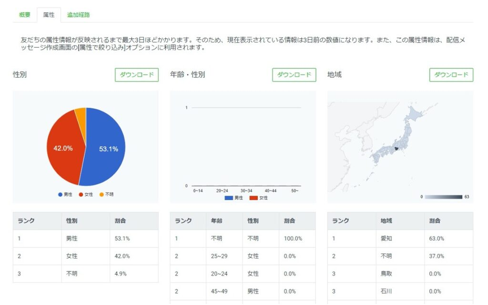
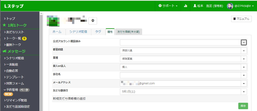
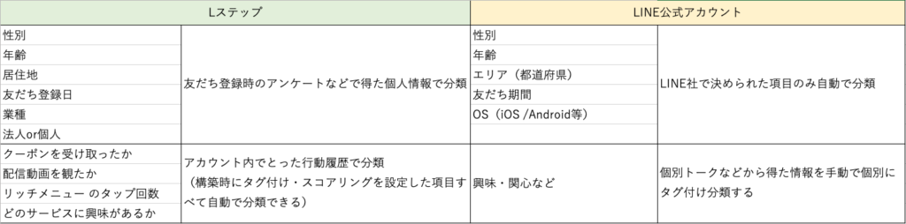

#029_Lステップ、本当に必要？
こんにちは！matsumotoです。今日はよく聞かれる「LINE公式アカウントを完全活用すれば、Lステップ必要ないんじゃ？」というご質問にお答えしていきたいと思います！
よく『LINE公式アカウントとLステップで機能を比較しても同じ機能があるんだけど・・・いったい何が違うの？本当にLステップって必要なの？』と聞かれることがあります。
その一つが【セグメント配信】機能です。 確かにLINE公式アカウントもLステップも両方とも『セグメント配信（分類分け配信）』ができるようになっています。こう書くと、一見同じ機能に見えるのですが、それぞれ内容は全く違うので解説しますね。
（１）LINE公式アカウントのセグメント配信機能
まずLINE公式アカウントでは分類できる項目が決められています。
・性別
・年齢
・エリア（都道府県）
・友だち期間
・OS（iOS/Android等）
・・・の5項目でのみ分類分けできるようになっています。なので、例えば“男性だけに配信”というセグメント配信が可能です。
ただ、ご注意！これには落とし穴があります！
それは・・・、フィルターを掛けた後の“分類分けしたグループ”の人数が50人以上いないと配信ができないということです。つまり、そもそも“男性（の友だち）が50人以上いる”ことが必須になります。しかも、その分類はLINEのAIが勝手に判定（推定）しているのです！

上の図を見てもらうと分かりますが、“性別”はある程度分類されていますが、“地域”となるといちいちLINEに登録していない人が多いですし、“性別・年齢”に関してはほぼ全く分からないというのが現実です。
残念ながら「LINE公式アカウントのセグメント配信はあまり使えない」ということなんです。正直これで『セグメント配信機能』と名乗っていることが少し恐ろしいです💦
（２）Lステップのセグメント配信機能
ではLステップはどうでしょうか。
Lステップでは、登録者の個人データに登録されているデータを全て活用したセグメント配信が可能です。例えば“居住地”・“法人か個人か”などから “配信動画を見たかどうか” や、はたまた“リッチメニューのタップ回数”による分類までできます。

そして、分類したグループの人数がたとえ1人であってもその人向けにセグメント配信ができます。
（３）一目で分かる！Lステップの方が優秀な理由

整理すると、LステップとLINE公式アカウントのセグメント配信の内訳の違いは、上の図の通りです。
LINE公式アカウントでは、そもそも性別や年齢・エリアなど基本的な属性ですらきちんと分類できない可能性が高く、またそれ以上の内容となるとアカウント主が手入力で友達につけたタグによるセグメントになるため、入力ミスや勘違いなど、人為的ミスも起こりやすいです。
その点、Lステップならきちんと友だちの行動履歴などを反映した属性により配信するので、精度の高い配信を行うことができます！
matsumotoがLステップを推す理由をお分かりいただけましたでしょうか？今回のブログ記事の内容について「もっと詳しく話を聞きたい！」「自分のアカウントで活用する場合、どういった流れになるのか」など、相談したいという方はぜひ初回60分無料相談をご活用ください！平日夜間や、土日のzoom面談なども受け付けておりますので、お気軽にご連絡くださいね。
まずはLINE公式アカウントを開設しましょう！
●LINE公式アカウントの開設方法はこちら
●LINE公式アカウントをオススメする理由はこち
●LINE公式アカウントでできることはこちら
●Lステップでできることはこちら